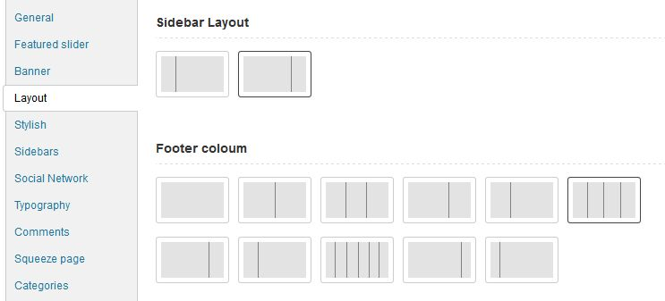
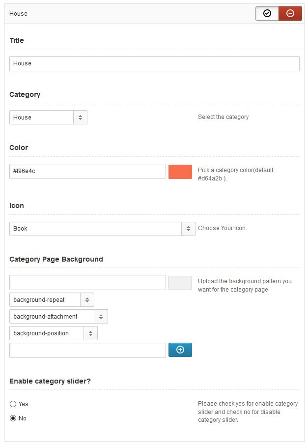

1. Admin panel
How can i access kentooz admin panel? Go to "appearance -> theme options" you can see kentooz admin panel.
For demo admin panel please go to import/export click import and look below step.
1. Click this after that copy all in settings.txt into your settings click import setting
2. Click this after that copy all in themeoptions.txt into your theme options click import theme options
3. Save
2. General options
- Enable logo image? = This setting for enable and disable logo image for website.
- Your logo = Upload your logo image and type full path here.
- Icon before Site name = Choose Your Icon for appear in logo, if your logo image disable.
- Your Favicon = Upload your ico image or type full path here
- Choice page navigation = Select your favorite page navigation, we have 3 page navigation, you can choice default, number page navigation and infinite scroll
- Enable breadcrumbs? = This setting for enable and disable breadcrumbs for website.
- 404 error image = Upload your image for 404 error page and type full path here.
- Head Scrip(s) = This setting for write script in head(hook wp_head) you can see the code in header.php
- Footer Scrip(s) = This setting for write script in footer(hook wp_footer) you can see the code in footer.php
5. Layout
- Sidebar layout = Select default sidebar for your global website. You can use left or right sidebar.

6. Stylish
- Select color scheme = Please select default scheme for your website, by default this kentooz themes use color schemes #20c1ea.
- Body background = This setting background for your website. Please select your background for your background sites..
- CSS File = If your modified your own css in custom.css file in includes/assets/css/custom.css. Of if you have own css file for example style-1.css, upload it in folder includes/assets/css/ so this option will auto detect your css file, after that select file and save changes.
9. Typography
- Body font = Select your body "Default" font from the available fonts, Fonts are provided via Google Fonts API. You can select style for font too, for live preview you can view preview font.
- Heading font = Select your heading "Default" font from the available fonts, Fonts are provided via Google Fonts API. You can select style for font too, for live preview you can view preview font.
10. Comment system
- Enable Facebook comment? = This setting for enable and disable facebook comment in single.
- Enable default comment? = This setting for enable and disable default comment in single.
12. Category
Here you can create exclusive style for category. Click add new button, see image below
After add new you will see box like image below, fill it.

Description:
- Title?? = Fill with title what do you want.
- Category = Select the category you want set style.
- Color = Pick a category color(default: #d64a2b ). This set will display exclusive color scheme in category.
- Icon = Choose Your Icon.This set will display icon in menu and category title.
- Background = Upload the background pattern you want for the category page.
For single post or page you can set via metaboxes.
13. SEO
- Enable SEO?? = Please check yes for enable kentooz SEO and check no for disable kentooz SEO. If you install plugin SEO you must disable this featured. WARNING, If you disable this setting, all setting in seo tabs will not display.
- Google Webmaster tool verification code = This Meta keywords will be used in google search results. If you use plugin SEO please disable SEO featured.
- Bing Webmaster verification code = Enter your verification code for bing webmaster here to add a meta tag to your homepage to verify your site..
- Pinterest site verification code = Enter your verification code for pinterest site here to add a meta tag to your homepage to verify your site..
- Gogole plus profile = Enter your Google Plus Profile URL here to link your sites pages to Google Plus...
- Enable noindex in category = Please check yes for meta noindex in category and check no for meta noindex in category. Check this for excluding category pages from being crawled. Useful for avoiding duplicate content..
- Enable noindex in date = Please check yes for meta noindex in date page and check no for meta noindex in date page. Check this for excluding date pages from being crawled. Useful for avoiding duplicate content..
- Enable noindex in author archive = Please check yes for meta noindex in Author Archives and check no for meta noindex in Author Archives. Check this for excluding Author Archive pages from being crawled. Useful for avoiding duplicate content..
- Enable noindex in tag archive = Please check yes for meta noindex in tag Archives and check no for meta noindex in tag Archives. Check this for excluding tag pages from being crawled. Useful for avoiding duplicate content..
For single post or page you can set via metaboxes.
12. AGC setting
- Enable AGC?? = Please click on/off for activated AGC in single and search page..
- Google API Key = Fill with your google API key. please see tutorial in http://gianmr.com/how-to-create-google-api-for-agc/
- Filter bad keyword = Please filter your bad keyword from your AGC.
13. Other
- Enable auto description? = Please check yes for enable auto description in single and attachment and check no for disable auto description in single and attachment.
- Auto content text? = Auto content text, available filter: %ktzblogname%=blogname, %ktzblogdescription%=blog description, %ktzpermalink%=permalink, %ktztitle%=title, %ktzdate%=date, %ktzauthor%=author, %ktzcategory%=category, %ktzblogname%=tag list, %ktzview%=Number view post, %ktzpostformat%=Post format.
- Enable auto read more? = This setting for enable and disable auto read more. If you disable this setting you can use readmore tag via post editor for read more
- Word display for auto read more? = Fill with number how much word will be display in auto read more.
- Footer coloum? = Select footer coloums layout, you can select footer coloum layout. Example 1/1 (full), 1/2 : 1/2, etc..
- Enable related? = This setting for enable and disable related post in single post.
- Related by taxonomy? = Please select what do you want related by the taxonomy. Example view by category or tags
- Enable authorbox? = Please click on/off for activated author box in single.
- Enable shared post? = This setting for enable and disable shared post in single post
Please click button below to see widget tutorial.
Widget tutorial.
8. Social network
Please enter your social network url. This will display social network icon in footer in your website. If you not fill the input icon will not display.